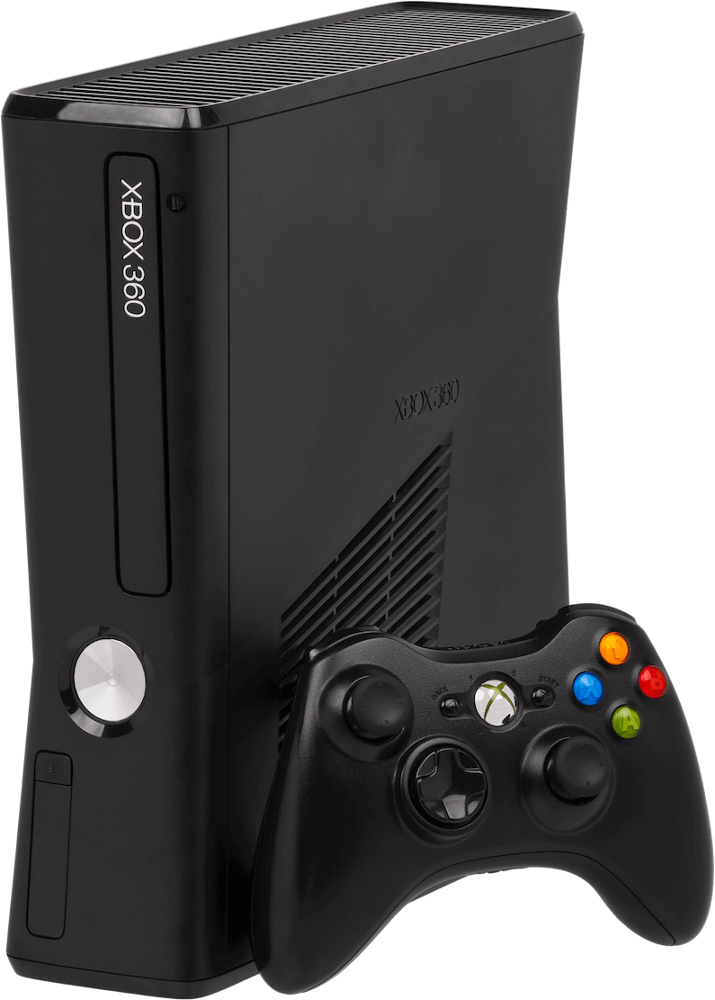

PlayStation 2
O PlayStation 2 (PS2) é um console de sexta geração produzido pela Sony Computer Entertainment. Ele foi lançado no ano 2000 e dividiu espaço no mercado com o Dreamcast da Sega, o GameCube da Nintendo e o Xbox da Microsoft.
Xbox 360
O Xbox 360 é um console desenvolvido pela Microsoft. Como sucessor do Xbox original, é o segundo console da série Xbox. Ele competiu com o PlayStation 3 da Sony e o Wii da Nintendo como parte da sétima geração de consoles.


PC Gamer
O Lenovo IdeaPad Gaming 3i é um notebook com especificações gamer muito eficiente para uso cotidiano e de alta performance. Possui especificações de um computador gamer de entrada atualmente, mas tem um desempenho maior que os consoles da geração passada, como o PS4 Slim e o Xbox One.